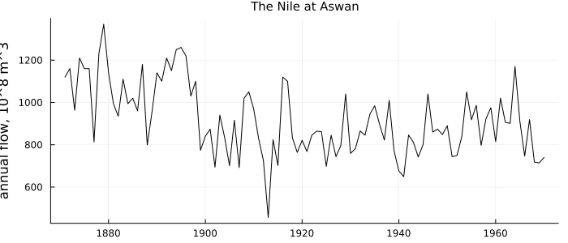
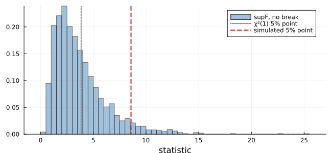
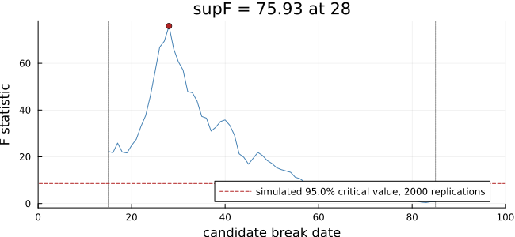
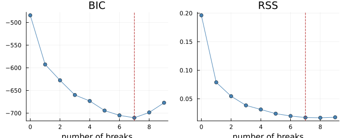
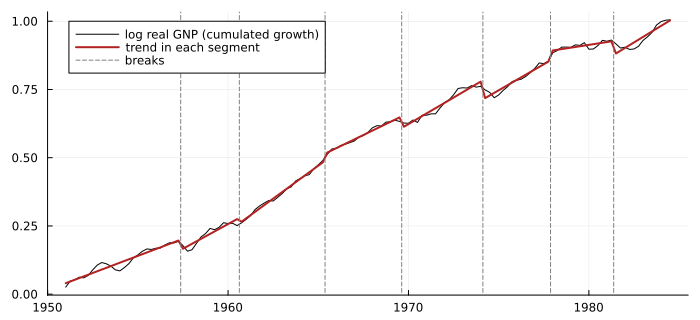
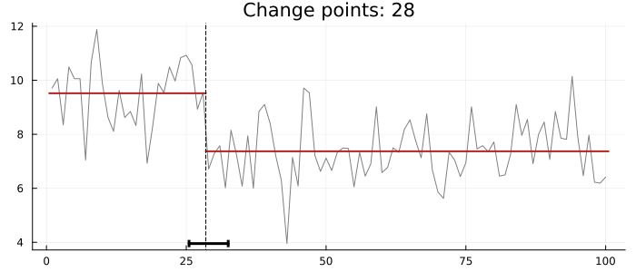
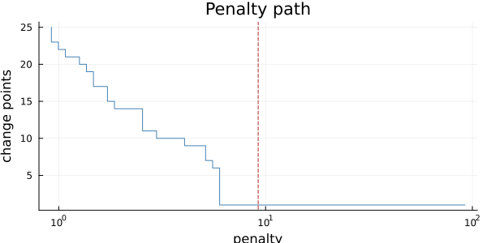
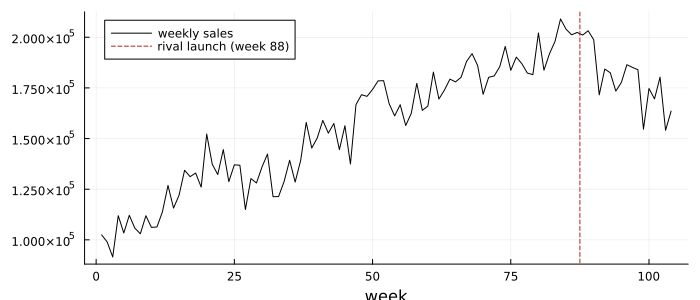

A Change That Does Not Come Back
using TSAnalytics, Plots, DelimitedFiles, Statistics, Random
using StatsAPI: coef, vcov
nile = Float64.(readdlm(TSAnalytics.NILE, ',', skipstart = 1)[:, end])
println("Nile flow 1871-1897: mean ", round(mean(nile[1:27]), digits = 1),
"; 1899-1970: mean ", round(mean(nile[29:end]), digits = 1), " (10^8 m^3)")Nile flow 1871-1897: mean 1097.7; 1899-1970: mean 850.0 (10^8 m^3)plot(1871:1970, nile; color = :black, label = "", ylabel = "annual flow, 10^8 m^3",
size = (700, 300), title = "The Nile at Aswan", titlefontsize = 10)
The Nile carried about a fifth less water after the turn of the century than before it. Work on the first Aswan dam began in 1898. The level dropped and stayed down.
The last three chapters were about series that switch between regimes. Chapter 55's regimes are hidden and recur, chosen by a Markov chain. Chapter 56's recur too, chosen by an observed variable crossing a threshold. A structural break is the third case: the regime is not observed, and it does not come back. Before the break one model holds, after it another, and the questions are whether there was a break, when, and how sure we can be of the date.
Where a break is placed
A break needs an index, and the literature does not agree on which side of the change it sits. Hamilton (1994) uses both conventions. In §14.3 (printed p. 425, PDF 440) the dummy is d_t = 1 for t ≤ T₀, so T₀ is the last observation of the first regime. In §15.5, Eq. (15.5.7) (printed p. 450, PDF 465), the first regime is t < T₀, so T₀ is the first of the second. Tsay (2010, §5.8, printed p. 275) uses the first convention: his t₀ = 522 is "the last trading day before the change". Montgomery, Jennings & Kulahci (2008, §6.7, printed p. 336) use the second: their step is 1 for t ≥ 88.
This package follows R's changepoint and strucchange: a breakpoint b is the last observation before the change. The Nile's is 28, the year 1898. A formula quoted from a book needs its convention checked before its index is used.
A known date: the Chow test
If the date is known, the test is ordinary. Fit the regression on each side and on the whole, and compare the sums of squares:
\[F = \frac{(S_0 - S_1 - S_2)/k}{(S_1 + S_2)/(n - 2k)}\]
with k coefficients in each regime. Under no break this is F(k, n − 2k). The test carries Chow's (1960) name, though none of the six textbooks this project checks against calls it that. Hamilton (§14.3) gives the equivalent Wald form, asymptotically χ²(k).
f = fstats(nile)
j = findfirst(==(28), f.dates)
println("break known to be after 1898: F = ", round(f.stats[j], digits = 2))break known to be after 1898: F = 75.93Enormous, but the date was chosen after looking at the plot, and that invalidates the F distribution.
An unknown date: the supremum problem
Without a known date, the natural statistic is the largest F over all candidate dates. Hamilton states the range used, from 0.15T to 0.85T (§14.3, printed p. 425), and leaves its distribution to Andrews (1993). It is not F, and the difference is large. A simulation shows how large: series with no break, each searched for its best break date.
rng = MersenneTwister(57)
reps = 2000
supF = [fstats(randn(rng, 100)).supF for _ in 1:reps]
crit_sim = quantile(supF, 0.95)
println("χ²(1) 5% point: 3.84; simulated 5% point of supF (n = 100, ", reps, " replications): ",
round(crit_sim, digits = 2))χ²(1) 5% point: 3.84; simulated 5% point of supF (n = 100, 2000 replications): 8.58histogram(supF; normalize = :pdf, bins = 60, color = :steelblue, alpha = 0.5, label = "supF, no break",
size = (650, 300), xlabel = "statistic")
vline!([3.84]; color = :gray, linestyle = :dot, linewidth = 2, label = "χ²(1) 5% point")
vline!([crit_sim]; color = :firebrick, linestyle = :dash, linewidth = 2, label = "simulated 5% point")
Treated as an ordinary F, the search would find a "significant" break in more than a third of the series that have none (37% here), not 5%. Andrews' critical values correct for the search. They are tabulated in his paper, not in any of the six books (Hamilton's statistical tables end with Johansen, Montgomery's with Durbin–Watson), and the published tables are not available under a licence this package can use. So fstats reports the statistics without p-values. The simulated value can be drawn on the plot, labelled as simulated:
plot(f; boundary = (value = crit_sim, reps = reps), size = (650, 300))
For the Nile, supF is 75.9, about nine times the simulated critical value of 8.6. The break is not in doubt.
Many breaks: Bai and Perron
With more than one break the search is over segmentations, which grow combinatorially in number. Bai & Perron (2003) showed that a dynamic programme finds the best segmentation for each number of breaks exactly. Their algorithm uses a table of every segment's sum of squares and a recursion over the number of breaks. breakpoints implements it, with BIC to choose the number.
Hamilton's Figure 15.4 (printed p. 451, PDF 466) shows Lam's (1990) estimates for US real GNP: a trend that shifts down at the recessions of 1957, 1973 and 1980. The same question, asked of the quarterly series Hamilton's Markov-switching model used (Chapter 55), cumulated back to a log level and fitted with a linear trend in each segment:
g = Float64.(readdlm(TSAnalytics.HAMILTON_GNP, ',', skipstart = 1)[:, 2])
lvl = cumsum(g) ./ 100 # log real GNP, up to a constant
n = length(lvl)
X = hcat(ones(n), 1:n)
bp = breakpoints(lvl; X = X, h = 0.1)
quarter(i) = string(1951 + (i - 1) ÷ 4, "Q", (i - 1) % 4 + 1)
println("breaks after: ", join(quarter.(bp.breaks), ", "))breaks after: 1957Q2, 1960Q3, 1965Q2, 1969Q3, 1974Q1, 1977Q4, 1981Q2plot(bp; size = (700, 280))
edges = vcat(0, bp.breaks, n)
trend = similar(lvl)
for i in 1:length(edges)-1
r = (edges[i] + 1):edges[i+1]
trend[r] = X[r, :] * (X[r, :] \ lvl[r])
end
t = 1951 .+ (0:n-1) ./ 4
plot(t, lvl; color = :black, label = "log real GNP (cumulated growth)", size = (700, 320), legend = :topleft)
plot!(t, trend; color = :firebrick, linewidth = 2, label = "trend in each segment")
vline!(t[bp.breaks] .+ 0.125; color = :gray, linestyle = :dash, label = "breaks")
BIC chooses seven breaks. Three of them (1957Q2, 1974Q1 and 1981Q2) fall at Lam's three recessions; the others mark the slowdowns between. Our fit is not Lam's. He estimated a Markov-switching model with a permanent drop at each switch, while this is a least-squares trend with the segments chosen by BIC, a different answer to a related question. It shows what a break model does with business cycles: it cuts wherever the trend bends enough to pay for a segment.
How sure is the date?
A break date is an estimate with a sampling distribution, and Bai (1997) derived it. The distribution is not normal; it depends on the size of the shift relative to the noise, and on how the regressors and variances differ on either side. break_confint computes his interval:
bn = breakpoints(nile)
ci = break_confint(bn)
cp = changepoints(nile; standardize = true)
println("Nile: break after ", 1870 + ci[2], ", 95% interval ", 1870 + ci[1], "–", 1870 + ci[3])Nile: break after 1898, 95% interval 1895–1902plot(cp; confint = ci, size = (700, 300))
1895 to 1902, asymmetric about 1898, the interval strucchange reports.
Penalised detection
The statistical tradition tests and dates. A second tradition, from signal processing and genomics, detects: choose the segmentation that minimises
\[\sum_{\text{segments}} \mathcal{C}(y_{s:e}) + \beta \times (\text{number of changes})\]
for a segment cost 𝒞 and a penalty β. Exact minimisation is optimal partitioning, O(n²). PELT (Killick, Fearnhead & Eckley 2012) prunes candidates that can never be optimal again and is close to linear in practice. It is exact whenever splitting a segment never raises its cost, which holds for every cost changepoints offers.
It does not hold for MBIC. That penalty adds a log(length) term per segment, and splitting a segment of 100 into two of 50 changes that term by log 50 + log 50 − log 100 = +3.22. PELT with MBIC can prune the optimum. R's changepoint makes that combination its default:
On a test series with one weak change, changepoint's default (MBIC with PELT) returns a change at 187. Exact optimal partitioning under the same MBIC criterion finds 139, with a criterion value 2.07 lower. No warning is given. changepoints refuses :mbic with search = :pelt and points to search = :exact. Python's ruptures disagrees elsewhere: its default jump = 5 considers only every fifth index, so true changes at 97 and 203 come back as 95 and 205.
The penalty decides how many changes are found. Its path shows how robust the answer is:
plot(cp; penalty_path = true, size = (600, 300))
A date known in advance: intervention analysis
When the date is known before the data are looked at, it can go straight into the model as a regressor. Box & Tiao (1975) called this intervention analysis. Montgomery's Example 6.4 (printed pp. 334–337, PDF 347–350) uses 104 weeks of cereal sales and a rival product launched in week 88:
cereal = Float64.(readdlm(TSAnalytics.CEREAL, ',', skipstart = 1)[:, 2])
step = Float64.((1:104) .>= 88)
m = fit_arimax(cereal, (0, 1, 1), step)
println("ARIMA(0,1,1) + step at week 88: ω₀ = ", round(coef(m)[1], digits = 1),
", se ", round(sqrt(vcov(m)[1, 1]), digits = 1))ARIMA(0,1,1) + step at week 88: ω₀ = -4208.7, se 8472.0plot(cereal; color = :black, label = "weekly sales", size = (700, 300), legend = :topleft,
xlabel = "week")
vline!([87.5]; color = :firebrick, linestyle = :dash, label = "rival launch (week 88)")
The estimated loss, about 4,200 a week, is large and imprecise: its standard error is twice its size. R's arima agrees to within 0.1%. Montgomery's Table 6.13 gives θ = 0.75886 and ω₀ = −2071.5 (se 637.4), which none of the specifications we tried reproduces from the data printed beside it. That is recorded with the other errata in Appendix B.
Thresholds were change points all along
Tsay (2010, §4.2.2, printed pp. 211–212) makes a connection worth keeping. Sort a SETAR's observations by the threshold variable instead of by time (an arranged autoregression), and the threshold becomes a change point in that ordering. Testing for a threshold is testing for a break with an unknown date, with the same nuisance-parameter problem and the same supremum statistics (Andrews & Ploberger 1994). Chapter 56's bootstrap and this chapter's simulation are two answers to one difficulty.
Summary
- A structural break is a regime change that does not recur. Its date is an estimate with a non-normal sampling distribution.
- With a known date the Chow/Wald test is standard. With a searched-for date the supremum statistic needs Andrews' distribution, and treating it as
Ffinds breaks that are not there. - Bai–Perron's dynamic programme gives the best segmentation for every number of breaks, and Bai's interval gives the date's uncertainty.
- Penalised detection (PELT) is exact for additive costs, but not for MBIC.
- Conventions differ by one: this package's breakpoint is the last observation before the change.
See also
- Manual: Finding When Something Changed
- Chapter 58: watching for change as it happens
- Chapter 61: what is still missing, including supF p-values